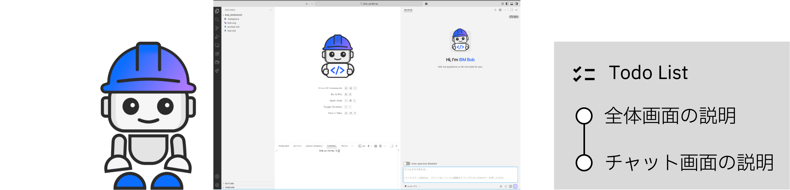
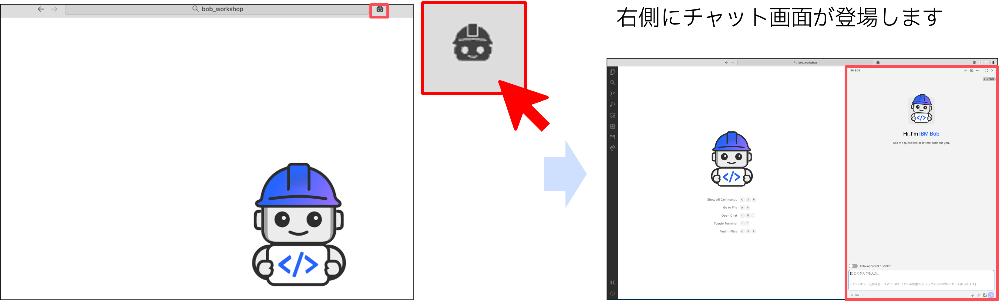
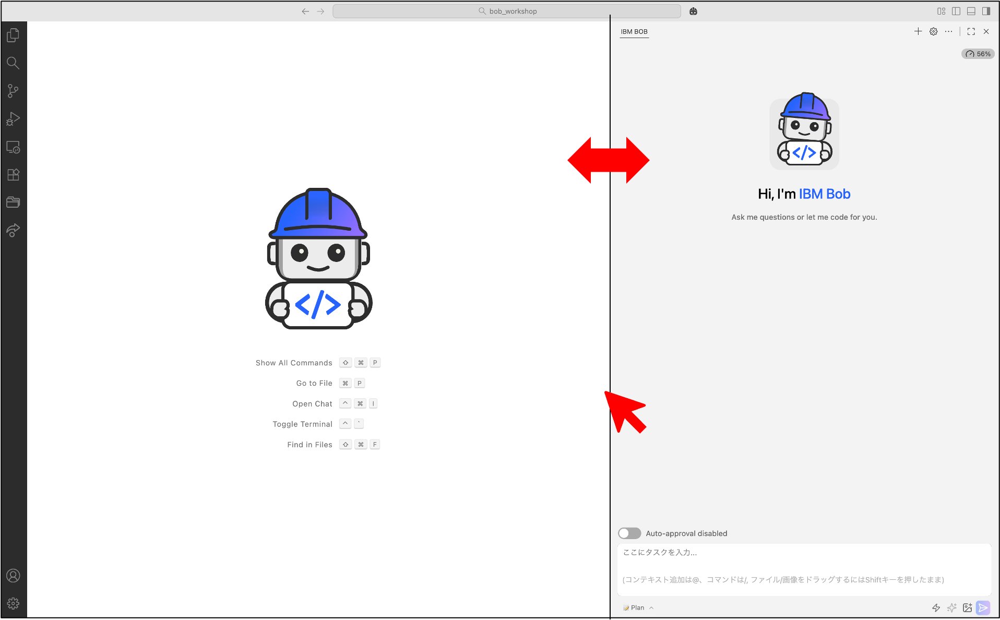
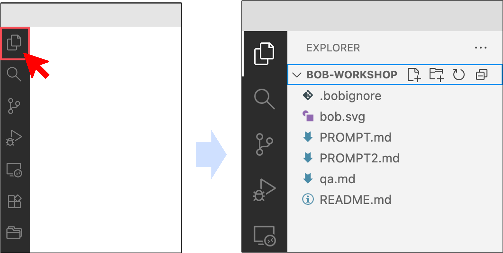
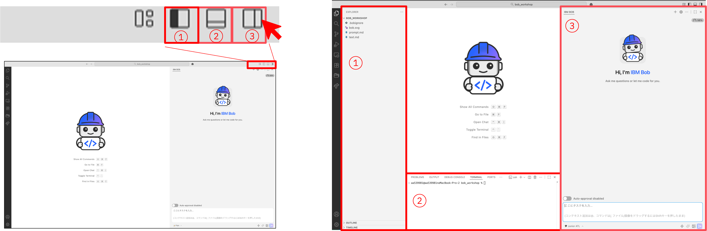
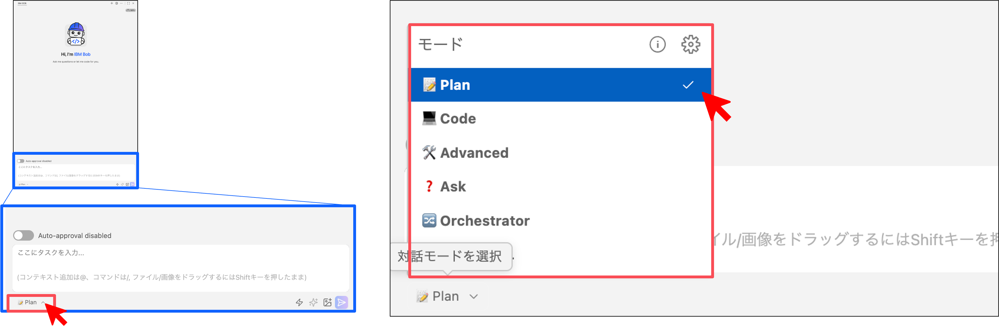
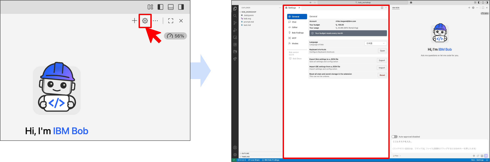
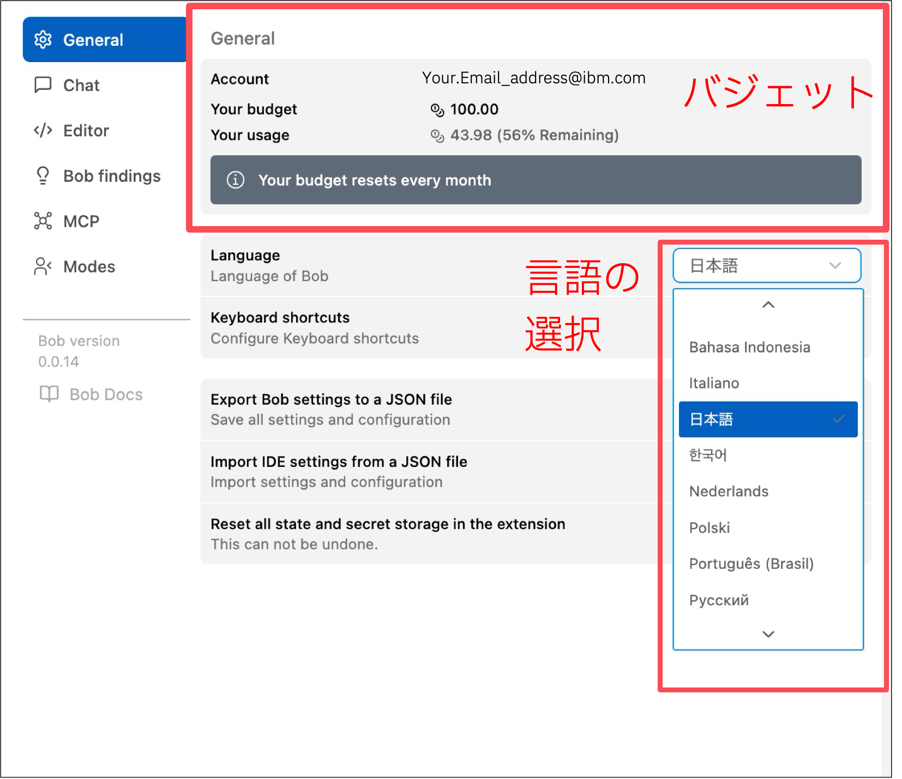
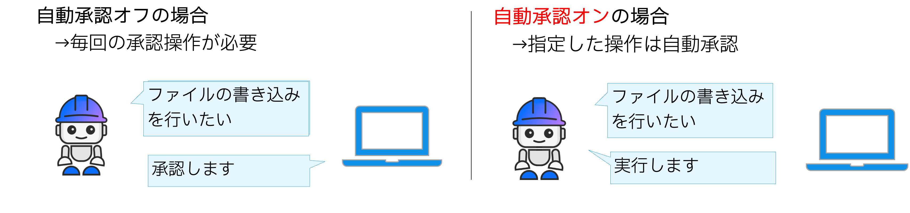
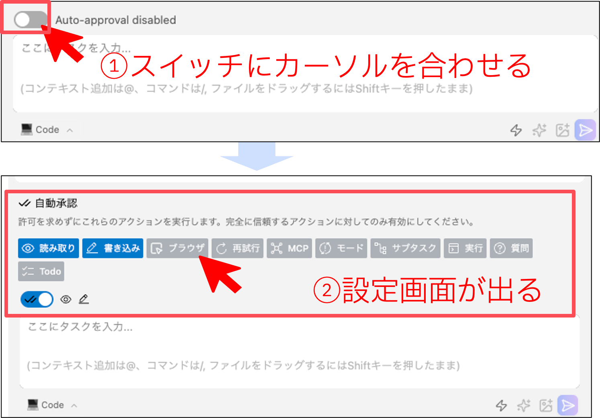

IBM Bobの画面構成と基本操作

IBM Bobの画面構成と基本的な操作方法を理解します。
画面構成の理解
1. チャット画面の表示

IBM Bob画面上部のBobアイコンをクリックすると、画面右側にチャット画面が開きます。
2. 画面の調整
チャット画面の幅調整: - チャット画面の境界をドラッグして、見やすい幅に調整できます

EXPLORERの表示/非表示: - 左上のファイルアイコンをクリックで切り替え

その他のパネル: - 画面右上のアイコンで、ファイル表示やターミナルを切り替えできます

IBM Bobのモード
1. モードの確認
チャット画面左下に、現在使用しているモードが表示されています。 この部分をクリックすると、利用可能なモードの一覧が表示されます。

2. 各モードの説明
| モード | アイコン | 説明 | 使用場面 |
|---|---|---|---|
| Plan | 📝 | 実装前に計画と設計を行う | 要件定義、仕様書作成 |
| Code | 💻 | コードを記述、修正、リファクタリング | 実装、バグ修正 |
| Advanced | 🛠️ | 複雑なタスク向けの拡張機能 | 高度な操作 |
| Ask | ❓ | 質問に答え、情報を提供 | 調査、相談 |
| Orchestrate | 🔀 | 複数の専門作業を調整し全体を指揮 | 複雑なプロジェクト |
設定の確認
1. 設定画面を開く

チャット画面右上の歯車アイコンをクリックすると、設定画面が開きます。2. 主な設定項目
- バジェット: 使用済みバジェットの確認
- 言語の選択: Bobの言語設定（必要に応じて日本語に切り替え）
- モデルの選択: 使用するAIモデルの選択

自動承認機能
1. 自動承認とは
Bobが行うアクション（ファイルの書き込み、コマンドの実行など）を自動的に承認する機能です。
自動承認オンの場合: - 指定した操作は自動承認される - 作業がスムーズに進む
自動承認オフの場合: - 各操作ごとに確認が必要 - Bobの動作を学習できる

2. 自動承認の設定確認
- チャット画面上部の「自動承認（Auto-approval）」スイッチにカーソルを合わせる
- 自動承認するアクションの一覧が表示されるので確認
- 確認後、スイッチを元の状態に戻す
推奨設定: - 初心者: オフ（各ステップで確認しながら学習） - 慣れてきたら: オン（効率的に作業）

チェックリスト
IBM Bobの画面構成と基本操作を理解したら、以下を確認してください：
- [ ] チャット画面の表示方法を理解
- [ ] 画面の調整方法を理解
- [ ] 各モードの役割を理解
- [ ] 設定画面の使い方を理解
- [ ] 自動承認機能を理解
次のステップ
IBM Bobの基本操作を理解したら、実際のチュートリアルに進みましょう！
前へ: 準備と設定 | 次へ: LAB1 - 初期開発